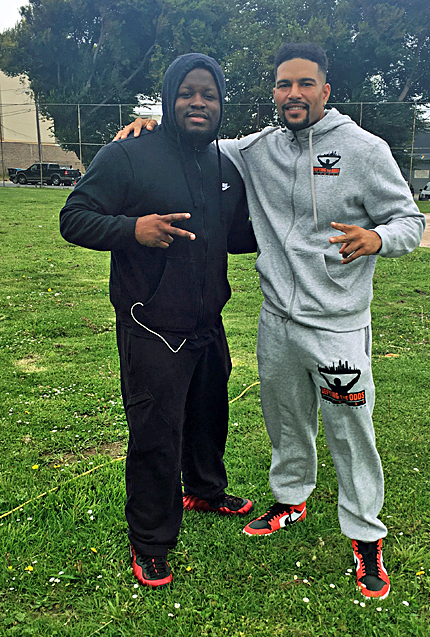

01
Youth Strength Training
Supporting at-risk youth ages 13 to 18 through trauma-informed strength training and structured fitness.
View training →Fitness is the entry point. Trust, discipline, confidence and opportunity are the outcome.
Defying the Odds Fitness is a non-profit organization based in San Francisco, California. We provide youth fitness & strength training programs to relieve the daily stress and trauma that plague our communities of color.
By combining trauma-informed strength training, nutritional health promotion, and positive reinforcement, we aspire to cultivate self-responsibility for a lifetime of improved personal and professional well-being.
Learn About TIWLof our students come from family incomes of less than $27k
of our students are currently on probation or parole
of our students are deeply grateful for your support

Supporting at-risk youth ages 13 to 18 through trauma-informed strength training and structured fitness.
View training →Health education, academic guidance, positive reinforcement and career coaching are built into the work.
Explore TIWL →
A pathway toward fitness education, certification, professional growth and community leadership.
Explore WDP →Your support helps open doors of opportunity for teens in underserved communities.
For more information about our training programs or supporting our cause, please contact founder Robert Harrison at 415.716.1854.